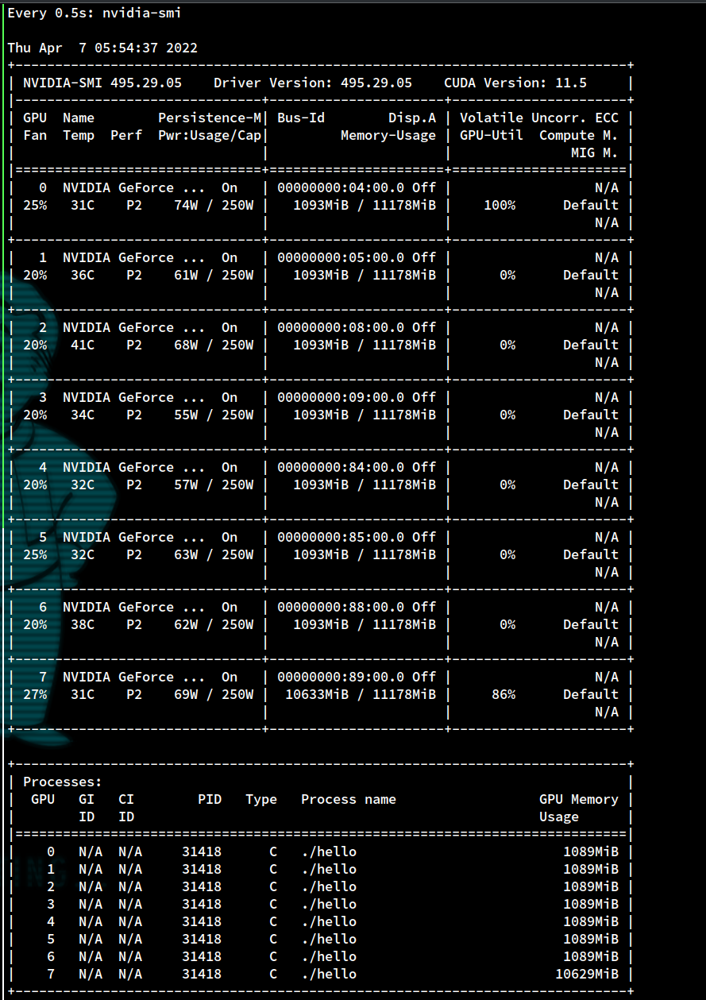
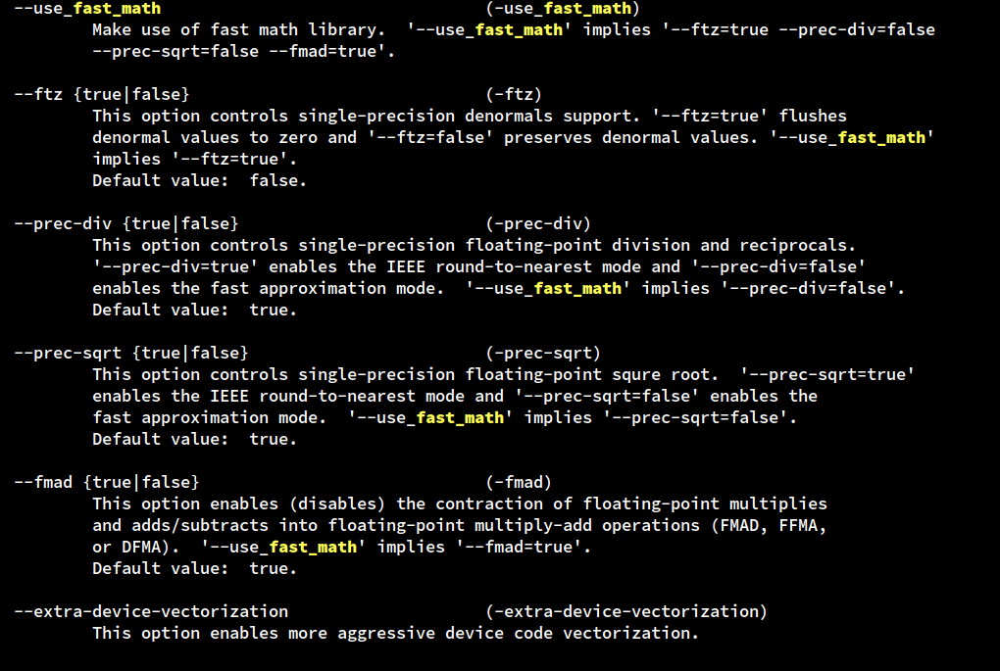
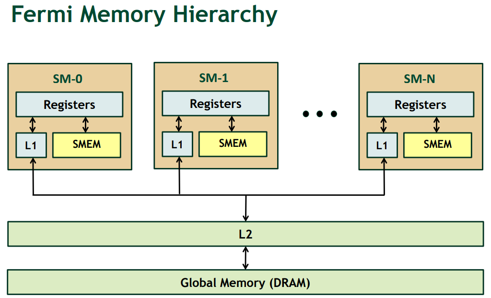
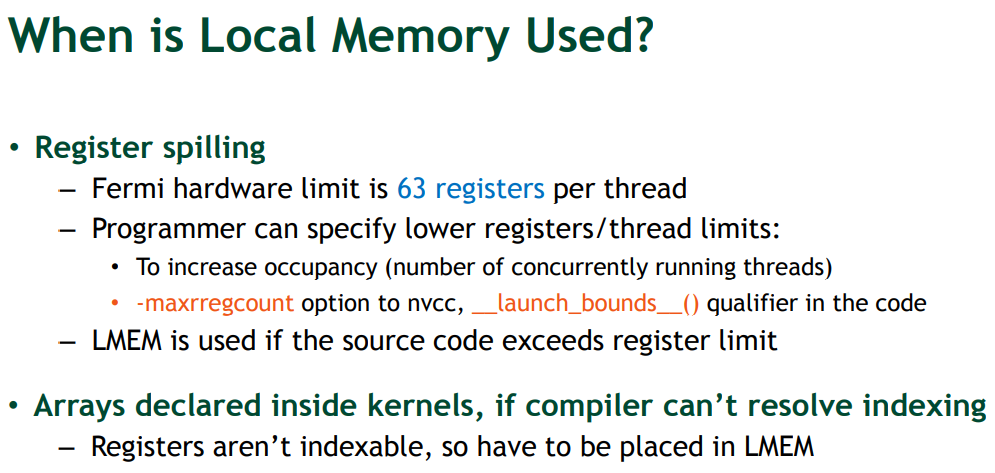
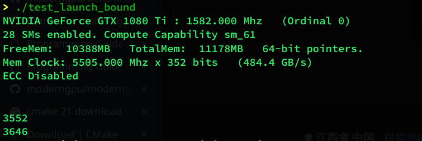

在目前为止的科研和学习经历中，cuda 的使用已经成为了日程的一个通电和要点问题。这里总结一些我用过的优化方法，留作笔记。
GPU 八门神器 1 人多力量大 这是一个“不算优化的优化”，如何在 cuda 中调用多张卡进行计算。
首先一个不是办法的办法： 使用 MPI 进行第一层级并行，通信到不同的机器上，在每一个机器上使用一张卡。（好吧我编不下去了，这个方法蠢了，单机多卡完全摆烂了）
(不过本优化还有一个明显的特性：依赖内存带宽，这个是 PCIE4.0 机器目前的瓶颈之一，NVLink 某种意义上可以有效处理这一矛盾，但是他也只是一种瓶颈转移——把瓶颈转移到我们的经费上)
使用的时候和大部分的方法是相同的，但是不同之处是我们需要使用 cudaSetDevice 去手动设置使用的设备编号。参考 cudatest-18。
但是由于鲁棒性的需求，我们的 cudaSetDevice 在下标超出范围的时候还是可以正常使用的，一般编号超过范围的卡，我们会把卡的计算信息映射到最后一张卡上面。但是会返回 cudaError 的 bool 数值，详情参考 cudaSetDevice 的 API 手册。
下面是使用 cudatest19 把 8 个 1080 都用满的例子。

2 fast math & 精度 如果程序中的数学函数：三角函数、快速傅立叶变换、幂次、根号，等等。这些使用频率过高的时候，我们在 cuda 中可以从用 fast math 编译选项进行优化。一般会有 5~15%的效率提升。

nvcc -h 中可以读取 –use_fast_math 的具体内容和功能
3 wrap divergence 之前说过：
1 2 3 4 5 现在的 GPU 架构中
但是我们调度的时候不会精细调度每一个 thread, 我们会用 wrap（1 wrap = 32 threads）去考虑这个事情。
这里参考一个例子 20-wrapdivergence
1 2 3 4 5 6 7 8 9 10 11 12 13 14 15 16 17 18 19 20 21 22 23 24 25 26 27 28 29 30 31 32 33 34 35 36 37 38 39 40 41 42 43 44 45 46 47 48 49 50 51 52 53 54 55 56 57 58 59 60 61 62 63 64 65 66 67 68 69 70 71 72 73 74 75 76 77 78 79 80 81 82 83 84 85 86 87 88 89 90 91 92 93 94 95 96 97 98 99 100 101 102 103 104 105 106 107 108 109 110 111 112 113 114 115 116 117 using std ::chrono::duration_cast;using std ::chrono::milliseconds;using std ::chrono::seconds;using std ::chrono::system_clock;template <class Func >__global__ void kernel (int n, Func func) {for (int i = blockDim.x * blockIdx.x + threadIdx.x;template <class Func1 , class Func2 >__global__ void kernel_split (int n, Func1 func1, Func2 func2) {if (threadIdx.x & 2 == 1 ) {for (int i = blockDim.x * blockIdx.x + threadIdx.x; i < n; i += blockDim.x * gridDim.x) {else {for (int i = blockDim.x * blockIdx.x + threadIdx.x; i < n; i += blockDim.x * gridDim.x) {template <class Func1 , class Func2 >__global__ void kernel_better (int n, Func1 func1, Func2 func2) {for (int i = 0 ; i < n; i += 2 ) {for (int i = 1 ; i < n; i += 2 ) {int main () int n = 1 << 26 ;int block_dim = 128 ;int grid_dim = (n - 1 ) / block_dim;auto begin_millis = duration_cast<milliseconds>(system_clock::now().time_since_epoch()).count();thrust::host_vector<float > x_host (n) ;thrust::host_vector<float > y_host (n) ;return std ::rand() / 3.0 ;});return std ::rand() / 11.0 ;});thrust::device_vector<float > x_dev (n) ;thrust::device_vector<float > y_dev (n) ;int index){if (index % 2 == 1 )else auto end_millis = duration_cast<milliseconds>(system_clock::now().time_since_epoch()).count();printf ("%ld\n" , end_millis - begin_millis);return std ::rand() / 3.0 ;});return std ::rand() / 11.0 ;});int index) {int index) {printf ("%ld\n" ,end_millis - begin_millis);return std ::rand() / 3.0 ;});return std ::rand() / 11.0 ;});int index) {int index) {printf ("%ld\n" ,end_millis - begin_millis);return 0 ;
这个例子有 3 个函数，第一个是没有考虑分支分离的写法，kernel 函数每一次函数都有大量的分支。
在 n = 1 << 20 的时候，三个耗时是（毫秒）：
在 n = 1 << 26 的时候，三个耗时是（毫秒）：
1 2 3 2963
这里看到提前分支可以做出很多优化。
4 register spill & local memory usage & latency hiding 4.1 Cuda Memory Intro Local Memory 这里的意思其实是指
memory where registers and other thread data is spilled
之所以这么设计和 GPU 的架构有关，以 Fermi 架构为例：

图中我们看到我们的 LMEM 指的是 “SMEM 用尽，或者说也就是 SM 资源用尽的时候，额外使用的内存”，充分利用 L1 的存储空间可以发挥最大性能，但是如果我们没有使用好，就会造成 L1 和 L2 通信，正如下面这个链接所示
https://stackoverflow.com/questions/23876594/cuda-local-memory-register-spilling-overhead
从 L2/DRAM 中取数据或者写数据的代价是非常昂贵的。
在 Maxwell 和之后的架构中 L1 和 SMEM 合并

这里官方说了一下 LMEM 的使用场景，如果线程的场景比较复杂，我们就需要进行 register spill 从而达到避免寄存器冲突的目的。具体的 spill 策略未知，官方文档中也只有 heuristics 一词。
cuda 对数组的使用不是用寄存器的，这个细节问题在下面的这个问题旁敲侧击给了一个漂亮的答案：
https://stackoverflow.com/questions/12167926/forcing-cuda-to-use-register-for-a-variable
4.2 Programmers’ Behaviors 上述的架构对于我们编程人员有这些指导意义：
在 SM 上的 TB 越多越好，让 Thread Block 不停的跑我们的利用率就会高，在一个 thread 进行等待内存换入换出的时候，GPU 有一个叫 latency hiding 的策略，从而将使用效率变高。但是如果 Thread Block 太多，我们每一个 SM 能分配的寄存器就会变少，所以就会发生 Register Spill, 使用更高级的 L1、L2 Cache 去代替 Registers。所以 TB 不能太多，需要减少 Register Spill 的次数。
简而言之：Thread Block 越多越好，Register 少一些（少一些换入换出）更好。
下面使用一个例子说明。
https://docs.nvidia.com/cuda/cuda-c-programming-guide/index.html#launch-bounds

基于 modernGPU 项目写了 launchbound mergesort 测试，在 21-目录里对不同的 launch bound 进行测试。
1 2 3 4 5 6 7 8 9 10 11 12 13 14 15 16 17 18 19 20 21 22 23 24 25 26 27 28 29 30 31 32 33 34 35 36 37 38 39 40 41 42 43 44 45 46 using std ::chrono::duration_cast;using std ::chrono::milliseconds;using std ::chrono::seconds;using std ::chrono::system_clock;using namespace mgpu;int main (int argc, char ** argv) standard_context_t context;auto begin_millis = duration_cast<milliseconds>(system_clock::now().time_since_epoch()).count();int count = 1000000 ;for (int it = 1 ; it <= 50 ; ++it) {mem_t <int > data = fill_random(0 , 100000 , count, false , context);less_t <int >(), context);std ::vector <int > ref = from_mem(data);std ::sort(ref.begin(), ref.end());std ::vector <int > sorted = from_mem(data);auto end_millis = duration_cast<milliseconds>(system_clock::now().time_since_epoch()).count();printf ("%ld\n" , end_millis - begin_millis);1000000 ;for (int it = 1 ; it <= 50 ; ++it) {mem_t <int > data = fill_random(0 , 100000 , count, false , context);less_t <int >(), context);std ::vector <int > ref = from_mem(data);std ::sort(ref.begin(), ref.end());std ::vector <int > sorted = from_mem(data);printf ("%ld\n" , end_millis - begin_millis);return 0 ;
4.3 shared memory 这里其实是两个话题的合并，但是我们一般都会把他们一起使用：
循环分块 + 共享内存预取数据
这种在 Stencil Computing 中特别常见
我们这里举一个例子，2D Laplacian 离散算子，这个是一个非常常见的例子了，就是
$$
那么我们如何用 cuda 实现呢？
首先无处理：
1 2 3 4 5 6 7 8 9 10 11 12 13 14 15 16 17 18 19 20 21 22 23 24 25 26 27 28 29 30 31 32 33 34 35 36 37 38 39 40 41 42 43 44 45 46 47 48 49 50 using std ::chrono::duration_cast;using std ::chrono::milliseconds;using std ::chrono::seconds;using std ::chrono::system_clock;__global__ void stencil (int row_num, int col_num, int *arr_data, int *result) {auto index = blockIdx.x * blockDim.x + threadIdx.x;auto current_row = index / col_num;auto current_col = index % col_num;auto data0 = arr_data[index];auto data1 = arr_data[(current_row + row_num - 1 ) % row_num * col_num + current_col];auto data2 = arr_data[(current_row + 1 ) % row_num * col_num + current_col];auto data3 = arr_data[current_row * col_num + (current_col + col_num - 1 ) % col_num ];auto data4 = arr_data[current_row * col_num + (current_col + 1 ) % col_num];4 * data0;int main () int row_num = 1 << 14 ;int col_num = 1 << 14 ;int *arr;int *result;sizeof (int ) * row_num * col_num);sizeof (int ) * row_num * col_num);for (int index = 0 ; index < row_num * col_num; ++index) {1024 - 512 ;auto begin_millis = duration_cast<milliseconds>(system_clock::now().time_since_epoch()).count();int total_numbers = row_num * col_num;int block_size = 1024 ;auto end_millis = duration_cast<milliseconds>(system_clock::now().time_since_epoch()).count();printf ("%ld\n" , end_millis - begin_millis);return 0 ;
之后加上分块，效果拔群
1 2 3 4 5 6 7 8 9 10 11 12 13 14 15 16 17 18 19 20 21 22 23 24 25 26 27 28 29 30 31 32 33 34 35 36 37 38 39 40 41 42 43 44 45 46 47 48 49 50 using std ::chrono::duration_cast;using std ::chrono::milliseconds;using std ::chrono::seconds;using std ::chrono::system_clock;__global__ void stencil (int row_num, int col_num, int *arr_data, int *result) {auto current_row = blockIdx.x * blockDim.x + threadIdx.x;auto current_col = blockIdx.y * blockDim.y + threadIdx.y;auto index = current_row * col_num + current_col;auto data0 = arr_data[index];auto data1 = arr_data[(current_row + row_num - 1 ) % row_num * col_num + current_col];auto data2 = arr_data[(current_row + 1 ) % row_num * col_num + current_col];auto data3 = arr_data[current_row * col_num + (current_col + col_num - 1 ) % col_num ];auto data4 = arr_data[current_row * col_num + (current_col + 1 ) % col_num];4 * data0;int main () int row_num = 1 << 14 ;int col_num = 1 << 14 ;int *arr;int *result;sizeof (int ) * row_num * col_num);sizeof (int ) * row_num * col_num);for (int index = 0 ; index < row_num * col_num; ++index) {1024 - 512 ;auto begin_millis = duration_cast<milliseconds>(system_clock::now().time_since_epoch()).count();int total_numbers = row_num * col_num;int block_size = 1024 ;32 , col_num / 32 , 1 ), dim3(32 , 32 , 1 )>>>(row_num, col_num, arr, result);auto end_millis = duration_cast<milliseconds>(system_clock::now().time_since_epoch()).count();printf ("%ld\n" , end_millis - begin_millis);return 0 ;
最后加上共享内存数据预取，这个工作边际效益递减，作用有限
1 2 3 4 5 6 7 8 9 10 11 12 13 14 15 16 17 18 19 20 21 22 23 24 25 26 27 28 29 30 31 32 33 34 35 36 37 38 39 40 41 42 43 44 45 46 47 48 49 50 using std ::chrono::duration_cast;using std ::chrono::milliseconds;using std ::chrono::seconds;using std ::chrono::system_clock;__global__ void stencil (int row_num, int col_num, int *arr_data, int *result) {auto current_row = blockIdx.x * blockDim.x + threadIdx.x;auto current_col = blockIdx.y * blockDim.y + threadIdx.y;auto index = current_row * col_num + current_col;auto data0 = arr_data[index];auto data1 = arr_data[(current_row + row_num - 1 ) % row_num * col_num + current_col];auto data2 = arr_data[(current_row + 1 ) % row_num * col_num + current_col];auto data3 = arr_data[current_row * col_num + (current_col + col_num - 1 ) % col_num ];auto data4 = arr_data[current_row * col_num + (current_col + 1 ) % col_num];4 * data0;int main () int row_num = 1 << 14 ;int col_num = 1 << 14 ;int *arr;int *result;sizeof (int ) * row_num * col_num);sizeof (int ) * row_num * col_num);for (int index = 0 ; index < row_num * col_num; ++index) {1024 - 512 ;auto begin_millis = duration_cast<milliseconds>(system_clock::now().time_since_epoch()).count();int total_numbers = row_num * col_num;int block_size = 1024 ;32 , col_num / 32 , 1 ), dim3(32 , 32 , 1 )>>>(row_num, col_num, arr, result);auto end_millis = duration_cast<milliseconds>(system_clock::now().time_since_epoch()).count();printf ("%ld\n" , end_millis - begin_millis);return 0 ;
5 unroll 循环展开，至于目的不做冗余介绍，这里直接展示一下 unroll 用法。
#pragma unroll 一句即可
6 zerocopy 一个非常简单易用的 trick
https://migocpp.wordpress.com/2018/06/08/cuda-memory-access-global-zero-copy-unified/
简而言之，在 host 使用命令：cudaHostRegisterMapped
即，如果我们数据只会在 GPU 产生和使用，我们不需要来回进行拷贝。
例子如下
1 2 3 4 5 6 7 8 9 10 11 12 13 14 15 16 0 );0 );0 );
7 coalesced acccess 和 4.3 小节中的例子一样，但是那个例子因为边界情况，有一些复杂，这里补充说明一下
问题的出现在于我们取的数据不是连续数据。
在图。(a) n 个长度为 m 的向量以线性方式存储。向量 j 的元素 i 用 v j i 表示，GPU 内核中的每个线程都分配给一个 m 长的向量。CUDA 中的线程组成一个块数组，GPU 中的每个线程都有一个唯一的 id，可以定义为 indx = bd * bx + tx，其中 bd 表示块维度，bx 表示块索引，tx 表示每个块中的线程索引。
垂直箭头表示平行线程访问每个向量的第一个分量，这种情况下，内存访问不是连续的。通过对这些地址之间的间隔进行归零(如上图所示的红色箭头) ，内存访问就得到了合并。
8 bank conflict https://blog.csdn.net/weixin_42730667/article/details/106171382
GPU 的共享内存，实际上是 32 块内存条通过并联组成的，每个时钟周期都可以读取一个 int。第 i 块内存，负责 addr % 32 == i 的数据。这样交错存储，可以保证随机访问时，访存能够尽量分摊到 32 个块。
如果在block内多个线程访问的地址落入到同一个bank内，那么就会访问同一个bank就会产生bank conflict，这些访问将是变成串行，在实际开发调式中非常主要bank conflict.
处理方法非常简单，我们不要把 shared memory 开辟的空间设置成 32 的倍数即可（线性同余方程，原理也很好理解）
也可以采用一个 API 的办法：
使用 cudaDeviceGetSharedMemConfig 手动修改 GPU 的 shared memory ，少用一点，不过这个办法看起来不如上面的划算，其实性能差不太多。因为上面的办法实际上也会有空间浪费。
思考和小结 上述诸多技术都是不断学习总结的成果。我认为之后我们应该更多的关注日常软件的更新里的细节，其中 register spill 和 fast math 的问题其实是在 blender 的 issue 里面学习的，学习在于日常的积累和发现。
此外，我觉得用好 cuda 需要写更多的程序和例子。
下一步可以做的工作 自从 LLVM 中加入了 cuda codegen 之后，我觉得可以考虑加入一些基于编译器前端的自动化的工作。
例如能否测试一个任务的复杂程度，从而评估一个合适的 launch bound。这个工作其实本来就应该交给编译器去完成，而不是让程序员自己数自己用的寄存器数目，自己考虑自己的 block 数目，这个怎么说都不太人性化。如果做的不好，可能会像 taichi 那样做成 flatten mode，会为了简化编程牺牲很多性能，做的过多可能会像 sycl 一样变得僵硬难用。这里能否建立一些合适的模型去评估可行性是一个值得思考的问题。
Reference